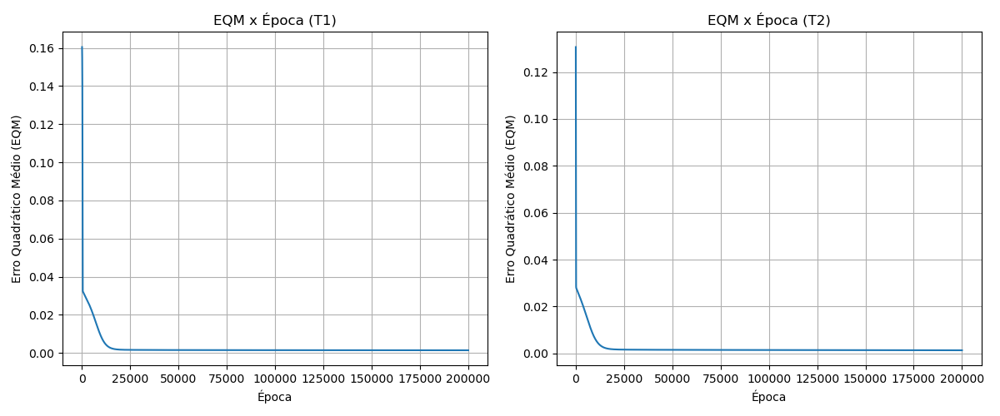

| Treinamento | Erro Quadrático Médio (EQM) | Número de Épocas |
|---|---|---|
| 1º (T1) | 0.00139067 | 200000 |
| 2º (T2) | 0.00133142 | 200000 |
| 3º (T3) | 0.00143786 | 200000 |
| 4º (T4) | 0.00140025 | 200000 |
| 5º (T5) | 0.00102194 | 200000 |

Pergunta: Explique de forma detalhada por que tanto o erro quadrático médio quanto o número de épocas variam de treinamento para treinamento.
Resposta: A variação ocorre devido à inicialização aleatória dos pesos sinápticos e dos vieses (biases) antes de cada treinamento. Como o algoritmo Backpropagation utiliza o método de descida de gradiente para minimizar o erro, a posição inicial da rede na superfície de erro (landscape) é diferente a cada execução. Consequentemente, o caminho percorrido pelo gradiente até o mínimo local também muda. Se os pesos iniciais estiverem mais "próximos" de uma boa solução, a rede convergirá em menos épocas; caso contrário, precisará de mais épocas. Da mesma forma, diferentes inicializações podem levar a rede a convergir para diferentes mínimos locais na superfície de erro, resultando em valores finais distintos para o Erro Quadrático Médio (EQM).
| Amostra | x1 | x2 | x3 | d | y_rede (T1) | y_rede (T2) | y_rede (T3) | y_rede (T4) | y_rede (T5) |
|---|---|---|---|---|---|---|---|---|---|
| 1 | 0.0611 | 0.2860 | 0.7464 | 0.4831 | 0.4858 | 0.4940 | 0.4827 | 0.4880 | 0.4978 |
| 2 | 0.5102 | 0.7464 | 0.0860 | 0.5965 | 0.5905 | 0.5902 | 0.5904 | 0.5926 | 0.5896 |
| 3 | 0.0004 | 0.6916 | 0.5006 | 0.5318 | 0.5260 | 0.5299 | 0.5236 | 0.5269 | 0.5269 |
| 4 | 0.9430 | 0.4476 | 0.2648 | 0.6843 | 0.7104 | 0.7133 | 0.7097 | 0.7115 | 0.7216 |
| 5 | 0.1399 | 0.1610 | 0.2477 | 0.2872 | 0.2932 | 0.2917 | 0.2956 | 0.2889 | 0.2896 |
| 6 | 0.6423 | 0.3229 | 0.8567 | 0.7663 | 0.7578 | 0.7565 | 0.7597 | 0.7576 | 0.7534 |
| 7 | 0.6492 | 0.0007 | 0.6422 | 0.5666 | 0.5673 | 0.5689 | 0.5660 | 0.5696 | 0.5506 |
| 8 | 0.1818 | 0.5078 | 0.9046 | 0.6601 | 0.6795 | 0.6779 | 0.6818 | 0.6822 | 0.6928 |
| 9 | 0.7382 | 0.2647 | 0.1916 | 0.5427 | 0.5308 | 0.5289 | 0.5307 | 0.5321 | 0.5405 |
| 10 | 0.3879 | 0.1307 | 0.8656 | 0.5836 | 0.6008 | 0.6035 | 0.6012 | 0.6041 | 0.5957 |
| 11 | 0.1903 | 0.6523 | 0.7820 | 0.6950 | 0.6922 | 0.6911 | 0.6935 | 0.6939 | 0.7031 |
| 12 | 0.8401 | 0.4490 | 0.2719 | 0.6790 | 0.6761 | 0.6788 | 0.6756 | 0.6777 | 0.6889 |
| 13 | 0.0029 | 0.3264 | 0.2476 | 0.2956 | 0.3012 | 0.3013 | 0.3035 | 0.2968 | 0.2996 |
| 14 | 0.7088 | 0.9342 | 0.2763 | 0.7742 | 0.7921 | 0.7951 | 0.7919 | 0.7916 | 0.7901 |
| 15 | 0.1283 | 0.1882 | 0.7253 | 0.4662 | 0.4660 | 0.4742 | 0.4627 | 0.4679 | 0.4741 |
| 16 | 0.8882 | 0.3077 | 0.8931 | 0.8093 | 0.8298 | 0.8268 | 0.8302 | 0.8263 | 0.8147 |
| 17 | 0.2225 | 0.9182 | 0.7820 | 0.7581 | 0.7877 | 0.7816 | 0.7888 | 0.7859 | 0.7849 |
| 18 | 0.1957 | 0.8423 | 0.3085 | 0.5826 | 0.5898 | 0.5911 | 0.5881 | 0.5907 | 0.5795 |
| 19 | 0.9991 | 0.5914 | 0.3933 | 0.7938 | 0.8097 | 0.8127 | 0.8089 | 0.8087 | 0.8167 |
| 20 | 0.2299 | 0.1524 | 0.7353 | 0.5012 | 0.4959 | 0.5027 | 0.4935 | 0.4985 | 0.5013 |
| Erro Relativo Médio (%) | 1.6838 | 1.8077 | 1.8108 | 1.5284 | 1.9370 | ||||
| Variância (%) | 1.2867 | 1.2527 | 1.4458 | 1.4846 | 2.0348 | ||||
Pergunta: Indique qual das configurações finais de treinamento {T1, T2, T3, T4 ou T5} seria a mais adequada para o sistema de ressonância magnética, ou seja, qual delas está oferecendo a melhor generalização.
Resposta: Com base na tabela de validação, a configuração mais adequada é a T4. Esta configuração apresentou o menor Erro Relativo Médio (%) no conjunto de teste, o que indica que as suas predições (y_rede) foram as mais próximas dos valores desejados (d) para amostras que não foram vistas durante o treinamento. Consequentemente, a rede T4 obteve a melhor capacidade de generalização.